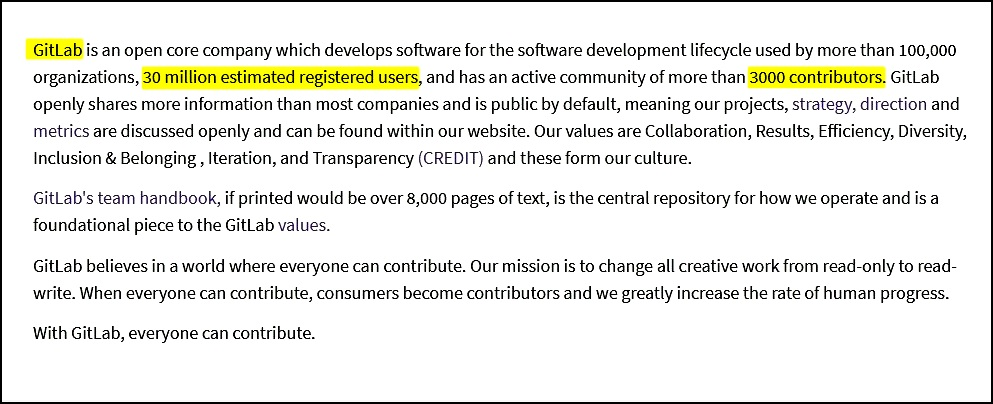
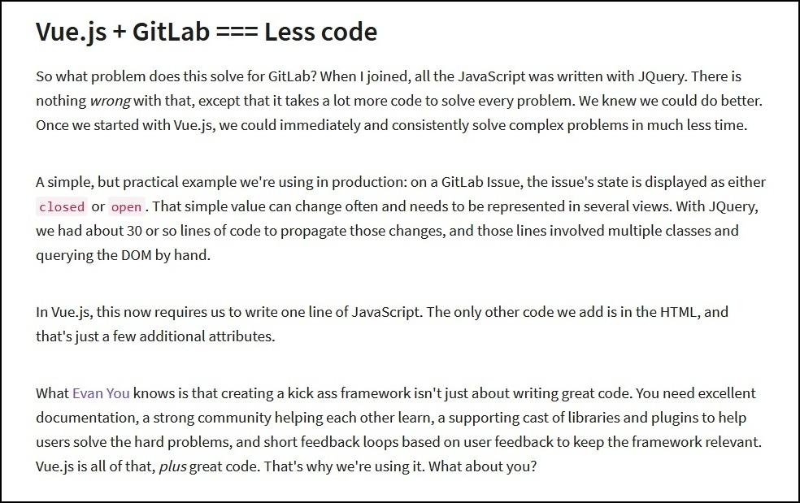
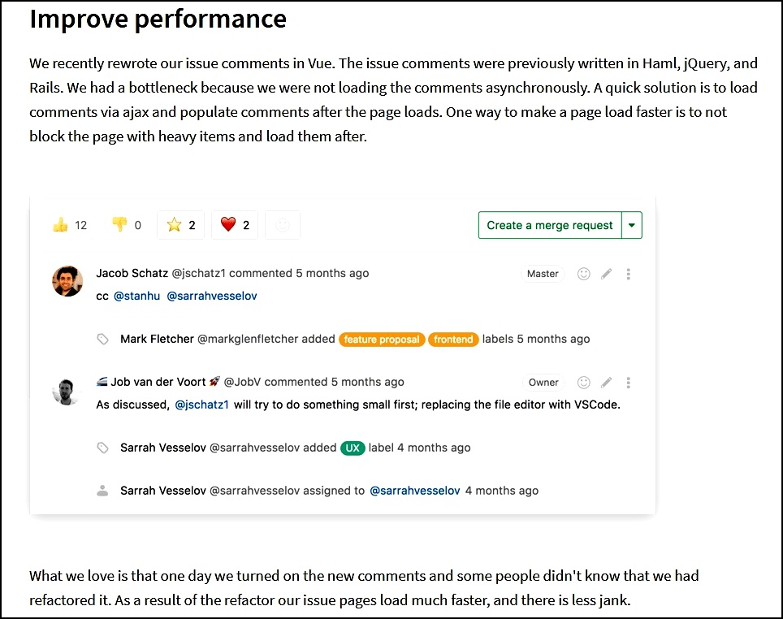
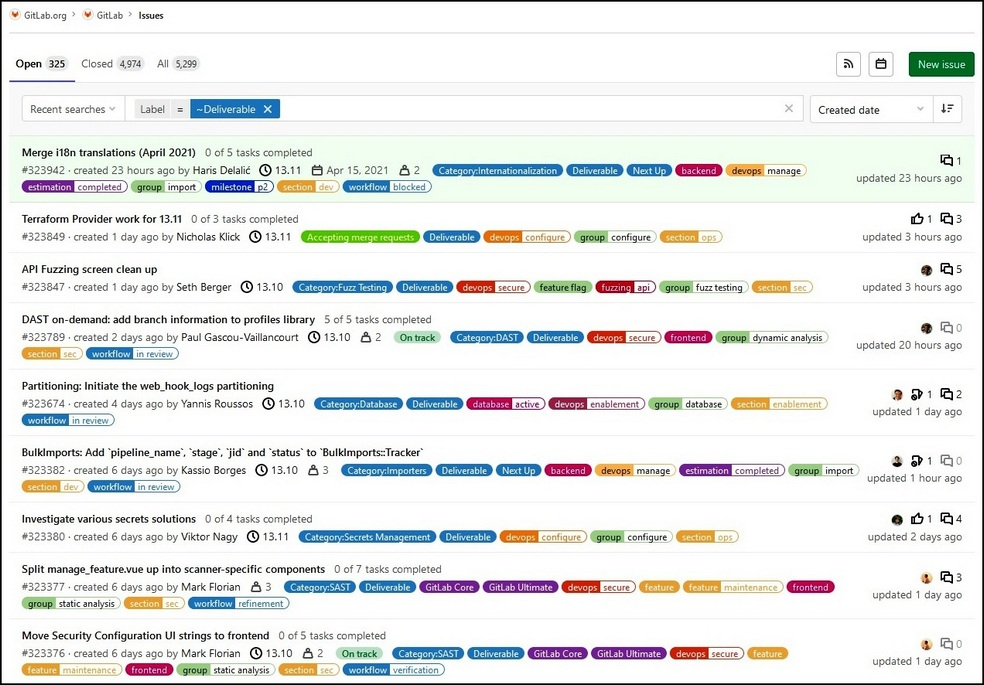

Who uses Vue.js? Gitlab, which is an open core company that
develops software for the software development lifecycle has turned to Vue Framework to solve many issues.

Gitlab chose VUE.js as their go to Javascript Framework for a few basic reasons:
- 1 - Improved performance, simplicity and ease of use allowing their team to easily write Javascript.
- 2 - The source code is very readable, and the documentation is the only tutorial you'll ever need.
- 3 - You don't need external libraries, and can use it with or without jQuery.
- 4 - You won't need to install any plugins, though many are available.

Vue.js improves performance for Gitlab. They recently re-wrote "issue" comments in Vue framework which allows for faster page loads. "How we do Vue: one year later"

Screen shot of Gitlab Issues board for community members to voice concerns or suggestions.
